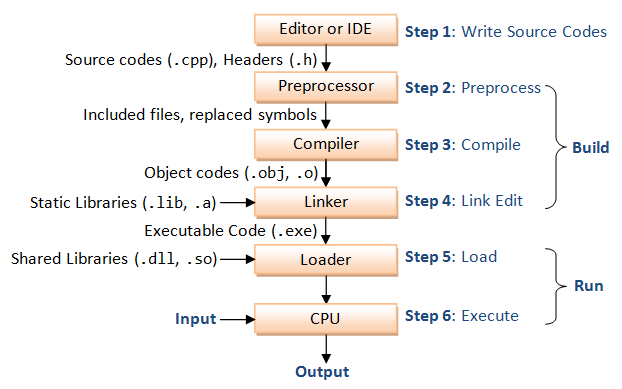

Program Mechanics
To create your own C++ programs, you follow a
mechanical process, a well-defined set of steps
called the edit-build-run cycle.
In short you:
- Create your source code using a text editor.
- Build your executable using a compiler toolchain
- Run your program using your operating system facilities
